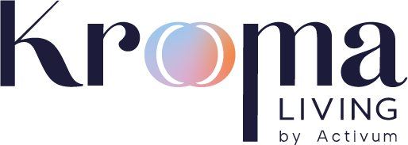
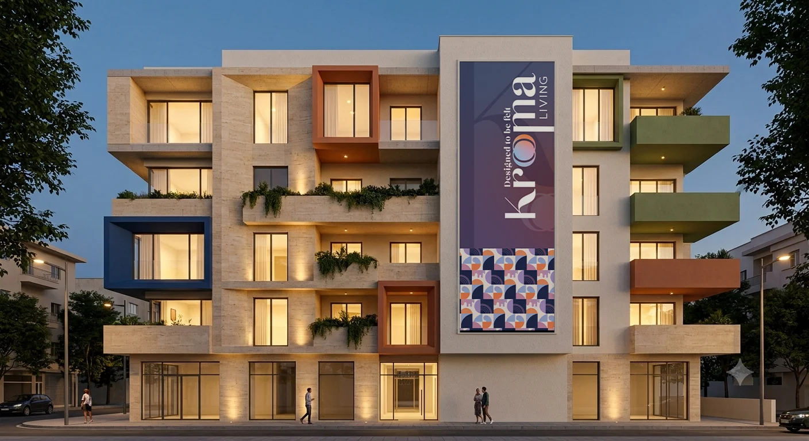
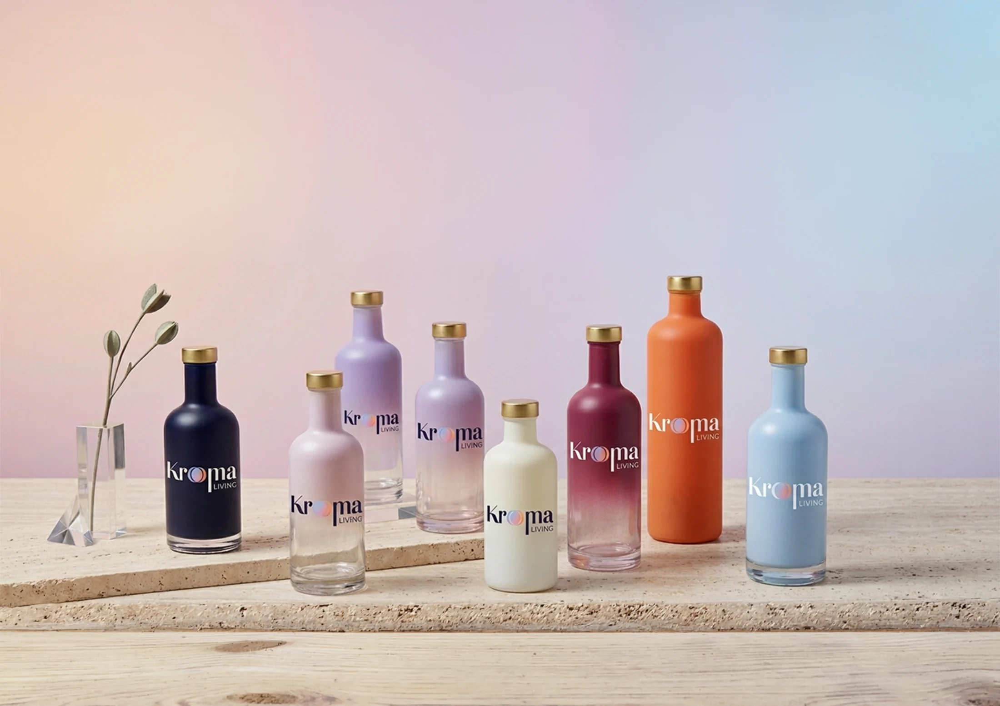
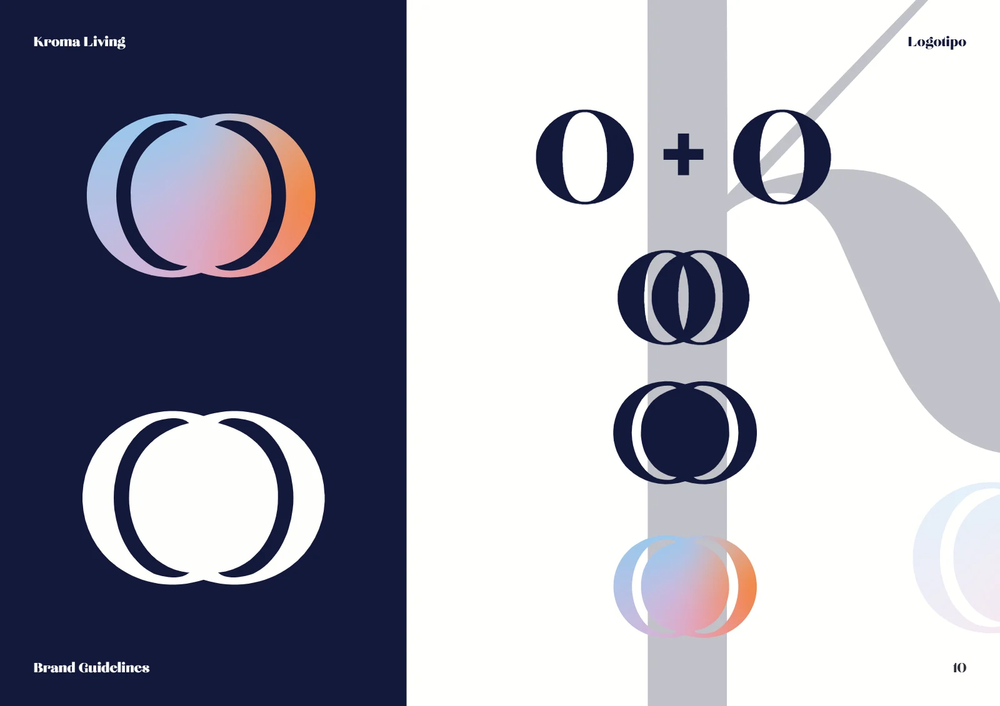
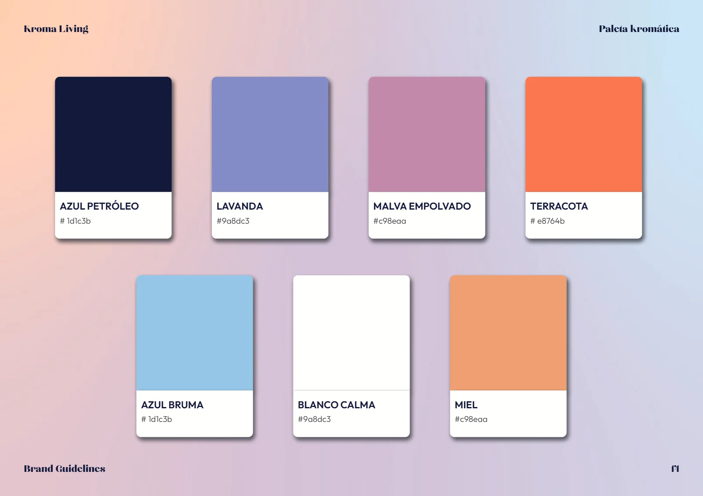
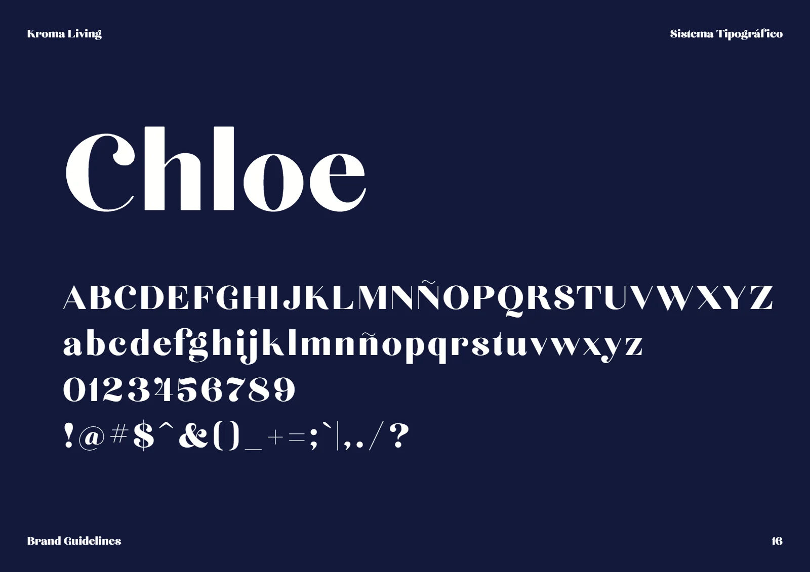
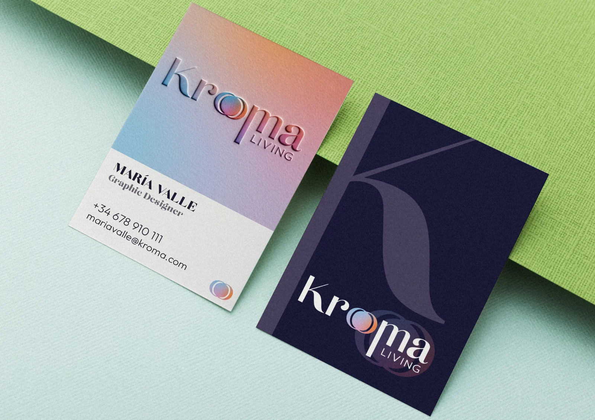

Identidad completa, landing y redes para Kroma Living, una marca de emotional living.
Full identity, landing page and social media for Kroma Living, an emotional living brand.
- IdentidadIdentity
- Manual de marcaBrand guidelines
- Landing
- RedesSocial

- Sector
- Inmobiliario · livingReal estate · living
- AñoYear
- 2026
- Mi rolMy role
- Identidad completa, manual de marca, landing y línea de redes.Full identity, brand guidelines, landing page and social media line.
- EntregablesDeliverables
- Logotipo y símbolo, paleta, tipografía, manual de 32 páginas, packaging, cartelería, merch, landing y plantillas de redesLogo and symbol, palette, typography, 32-page guidelines, packaging, signage, merch, landing page and social templates
- HerramientasTools
- Illustrator · InDesign · Claude · Vercel · GitHub
El retoThe challenge
Kroma Living nacía como marca nueva y necesitaba salir con marca, web y redes en unos dos meses. El concepto de partida era el emotional living: diseñar desde cómo debe sentirse vivir en un espacio, no solo desde lo que ofrece.Kroma Living was born as a new brand and needed brand, website and social media live in about two months. The starting concept was emotional living: designing from how living in a space should feel, not only from what it offers.
TipografíaTypography
Paleta kromáticaKromatic palette
#1D1C3B#9A8DC3#C98EAA#E8764BProcesoProcess
- Un símbolo hecho de colorA symbol made of colour
Dos “O” que se cruzan en un degradado suave: el espectro que da nombre a Kroma, convertido en símbolo e isotipo.Two overlapping “O”s in a soft gradient: the spectrum behind the Kroma name, turned into symbol and icon.
- Una paleta con nombre propioA palette with its own names
Azul petróleo como base y lavanda, malva empolvado y terracota como acentos: una “paleta kromática” cálida y adulta.Petrol blue as the base, with lavender, dusty mauve and terracotta as accents: a warm, grown-up “kromatic palette”.
- Probada en aplicaciones realesTested on real applications
El sistema se validó pronto en packaging, fachada, merch y web, para llegar al lanzamiento con las piezas listas.The system was tested early on packaging, façade, merch and web, so launch day came with every piece ready.

Brand book




ResultadoResult
